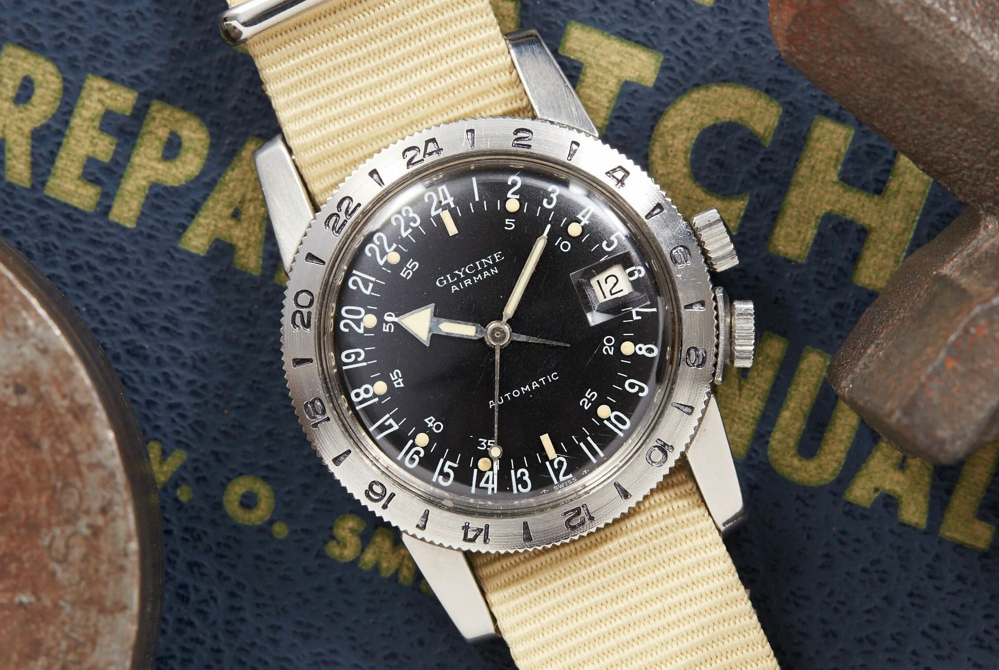
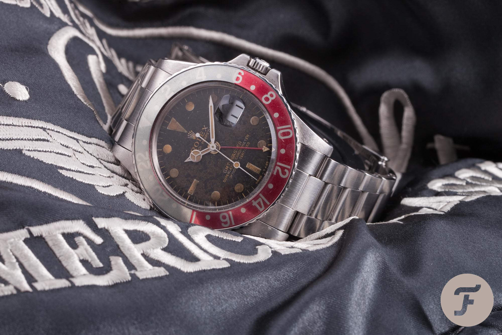

The pure brilliance of a GMT watch comes from its simplistic and ingenious engineering. The 24-hour clock hands usually have a different color and are geared to turn half as quickly as the 12-hour hands. To put it simply, the 12-hour clock hands complete a full rotation twice a day. Whereas, the 24-hour clock hands spin around only once. The 24-hour watch also enables the user to easily distinguish whether it is AM or PM.

A vintage Glycine Airman watch
The creation of the first GMT watch is often credited to a small brand named Glycine. Its 1953 Airman watch was capable of tracking two 24-hour time zones at once, thanks to a 24-hour rotating bezel and a dial calibrated to display the time on a 24-hour basis.

Rolex GMT-Master 6542
However, it was Rolex that popularised the concept of the GMT watch with its GMT-Master. Released in 1954 and conceived for Pan Am pilots, this watch defined the genre and is still a blueprint for the category. It combined a traditional 12-hour display of local time, a 24-hour scale indicated by an arrow-tipped hand (not independent back then) and a two-tone rotating bezel with a 24-hour scale, enabling the wearer to display the time in other zones. And with it, the GMT watch became an essential tool for travellers.